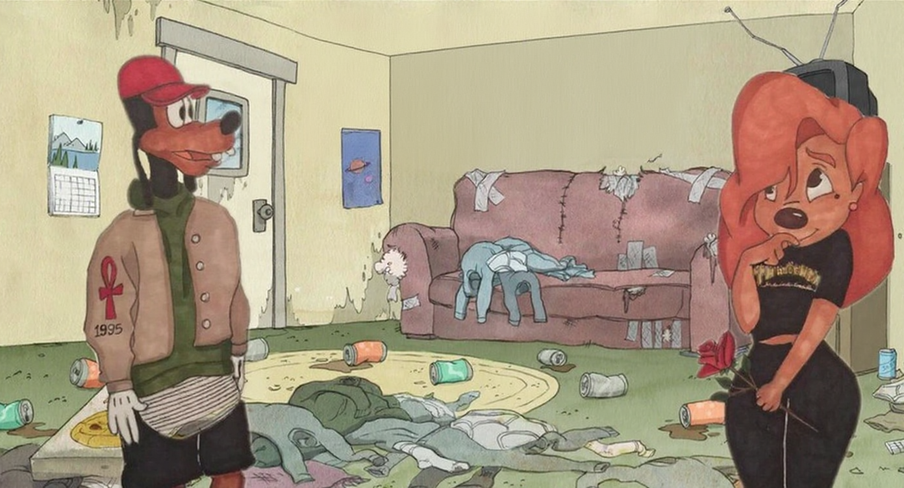
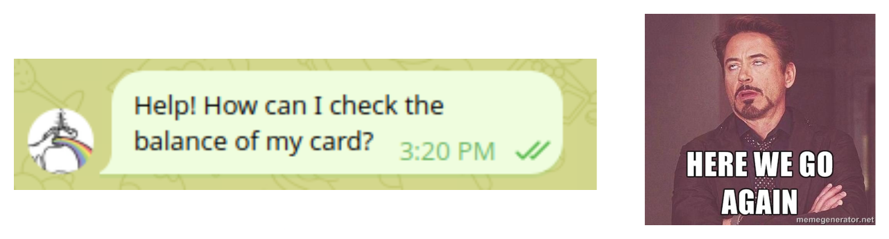
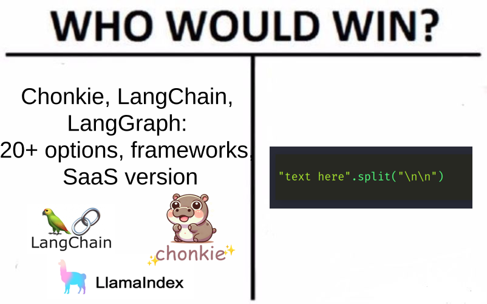
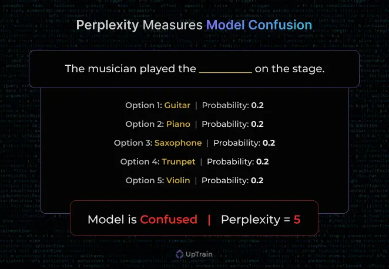

HOW NOT TO EVALUATE

your RAG
Berlin Buzzwords 2025 | Roman Grebennikovwhoami
- PhD in CS, quant trading, credit scoring
- Findify: e-commerce search, personalization
- Delivery Hero: food search, LLMs
- Opensource: Metarank, lightgbm4j, flink-scala-api
Nixiesearch
- TLDR: Lucene search engine on top of S3
- Expected: facets, filters, autocomplete, RFF
- ML: embedding inference, cross-encoder ranking
- RAG: LLM inference via llamacpp
Perks of being open-source
- they: hey nice project!
- you: thanks! ❤️
- they: we use it for RAG in a bank with 3M customers
- they: and got some issues, can you help?
- you: hmm ü§îü§îü§î
The agenda
- intro: RAG as a support agent for support agents
- data: chunking and context length
- search+generation: the R and G in RAG
- tools: RAGAS, deepeval and why you should build your own
Support agent for support agents
80% of all questions are covered by FAQ
- 40%: answer immediately as you know the answer
- 40%: answer after checking FAQ/docs
- 20%: answer after internal discussion
Support agent for support agents

- Still human: nobody likes chatting with ChatGPT
- Faster onboarding: just read the docs
RAG
- Dialogue: summarize to a query
- Retrieve: search for top-N relevant docs
- Summarize: answer the last question in the dialogue
Getting real
- FinTech: airgapped, you can't just use OpenAI API
- Languages: CIS region, Uzbek/Kazakh
- Knowledge base: what knowledge base?
wait is RAG solved thing in 2025?
Iteration #1
- LLM convert all docs to Markdown
- LangChain chunk, embed with multilingual-e5-small
- Qwen2.5 for summarization

CTO@k: it works but sucks
- Relevant docs missing, irrelevant found
- Wrong query (or summary) generated
CTO@k: it works but sucks
- R: Relevant docs missing, irrelevant found
- G: Wrong query (or summary) generated
RAG in a nutshell
Vibe-evaluating RAG
TLDR: evaluate each RAG step separately
RAG as a system
preprocessing + retrieval + generation = RAG

decompose > evaluate > improve
Corpus preprocessing
Corpus preprocessing
- Local files: docx, pdf, txt, napkin scans
- Convert everything to markdown
Evaluating chunking
- chunking = the way you create corpus
- cannot label changing corpus üôÅ
"vibe fixing"
Chunking: large vs small
- Large: embed complete documents
- Small: split docs to chunks
Problems of large chunking
Bad UX: no time to check, context too large
Problems of small chunking

Lost context due to over-chunking
Anthropic's contextual chunking

Anthropic's contextual chunking
- LLM inference per chunk is expensive üôÅ
- Yes but we have markdown titles üòÉ
GPU poor contextual chunking

Chunking TLDR
- Contextual: title + 1-2 paragraphs
R in RAG
R in RAG
The most relevant context
- Context window is limited (but it's growing)
- Fill the context with relevant chunks
Which model to choose?
Not all embeddings are OK for non-English!
- No labels, no queries, unusual languages
- No baseline to compare against
- No public eval corpus üôÅ
MIRACL dataset
- TLDR: wikipedia query + docs + labels, 18 languages
- No Kazakh/Uzbek split, but what if we machine-translate? ü§î
Machine-translated datasets?
m-MARCO: A Multilingual Version of the MS MARCO [2021]
Are MT/LLM models of 2025 better? ü§î
XCOMET, en->xx
- Google Translate: great on high-resource languages
- GPT4o: strong on low-resource languages
MTEB eval on MT data
- The bigger = the better on low-resource languages
- Wait, LLM as an embedding model?
Decoder-only embeddings
- BERT embeddings: bidirectional attention
- Decoder embeddings: only last token knows it all
- Decoders: prefill+generation stages
okey retrieval = quepid time?
- Perfect world: get queries, label results
- Reality: "who's going to label results?"
RAGAS approach: LLM-as-a-judge
Context precision+recall
No NDCG: position does not matter for LLM
Context relevance
Context retrieval metrics overview
- Absolute numbers: not much benefit
- Relative performance: with automated evals!
G in RAG
- What open LLM to use?
- Balance: precision, hardware, latency
Evaluating generation
- Comprehension: how LLM can understand language?
- Generation: how good is generated response?
FB Belebele benchmark
- 122 languages: passage, question, 4 answers
- 400 triplets per language
Task example
Passage:
The atom can be considered to be one of the fundamental building blocks of
all matter. Its a very complex entity which consists, according to a simplified
Bohr model, of a central nucleus orbited by electrons, somewhat similar to
planets orbiting the sun - see Figure 1.1. The nucleus consists of two
particles - neutrons and protons. Protons have a positive electric charge
while neutrons have no charge. The electrons have a negative electric charge.
Query: The particles that orbit the nucleus have which type of charge?
A: Positive charge
B: No charge
C: Negative charge
D: Positive and negative charge
- TLDR: NLU evaluation, but multilingual
Results
TLDR: Gemma2 (and 3!) is one of the best open LLMs
Benchmarking generation
[1]: UpTrain: Decoding Perplexity and its significance in LLMs